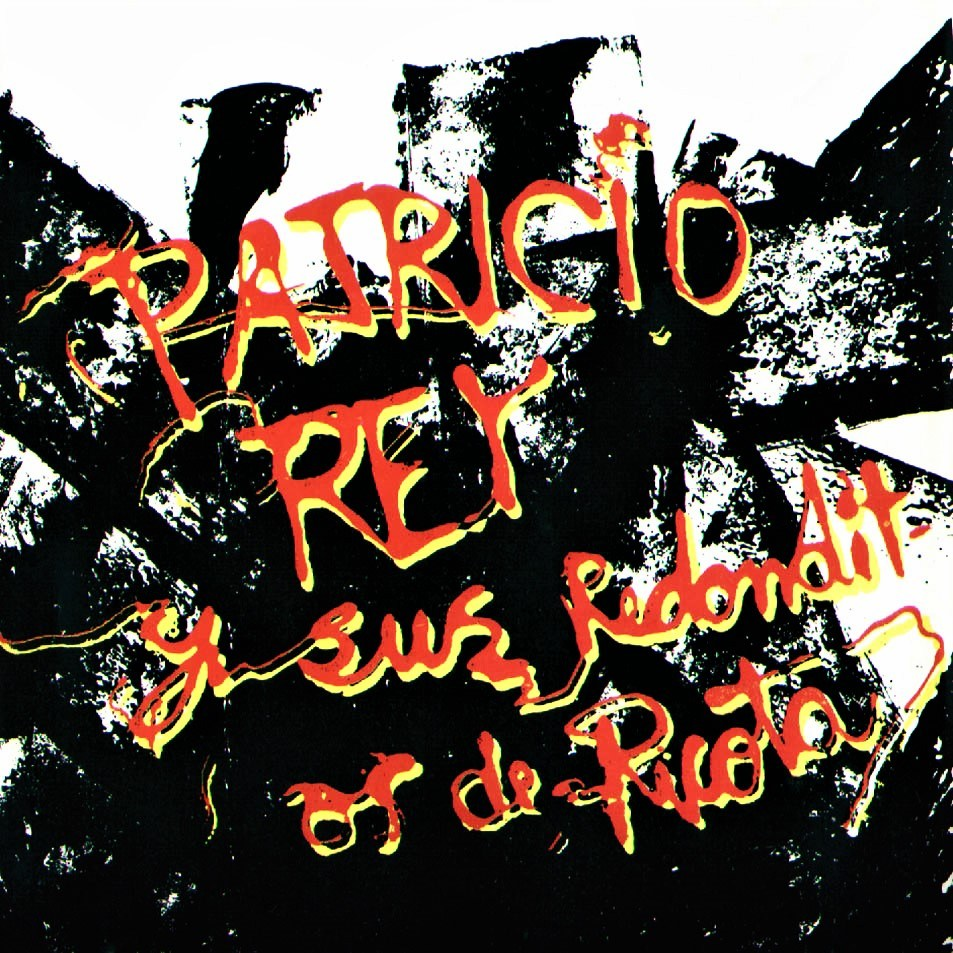
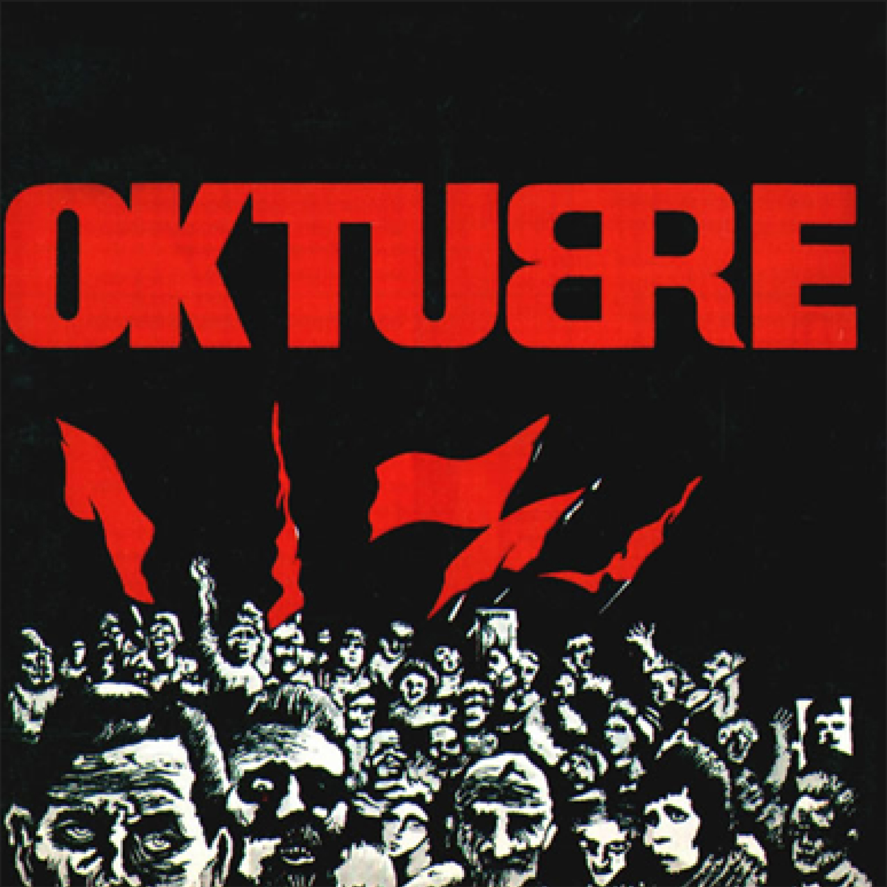
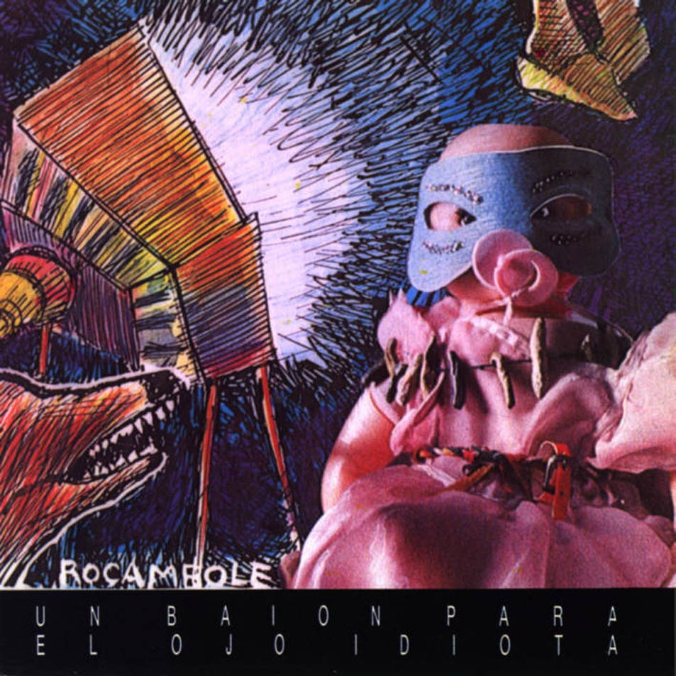
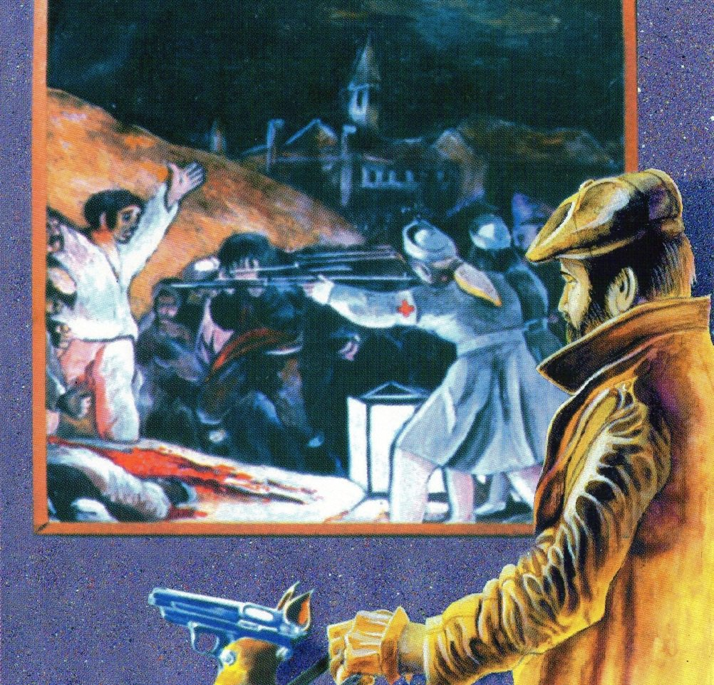
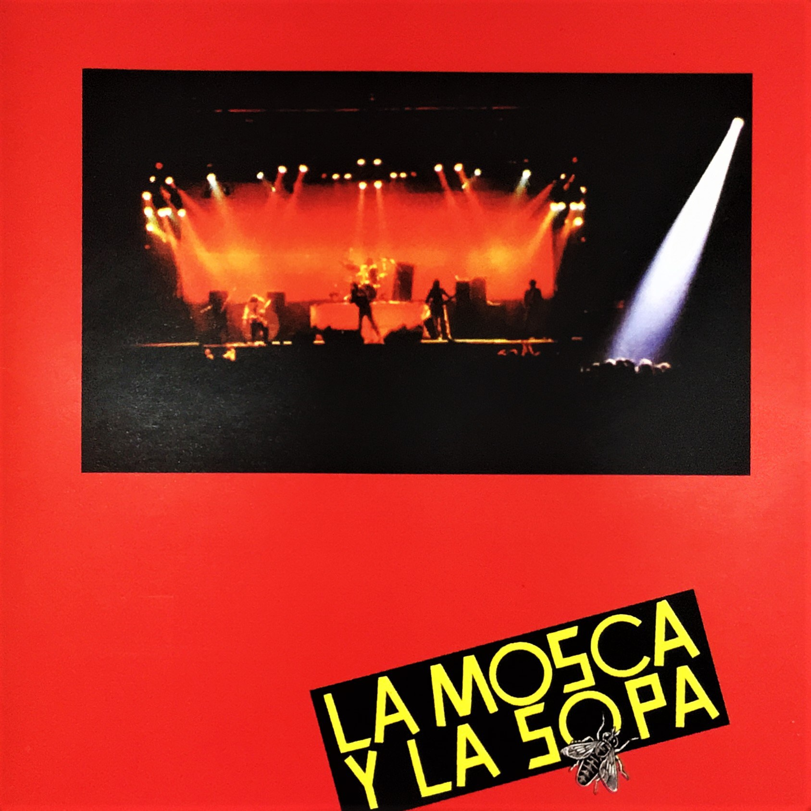
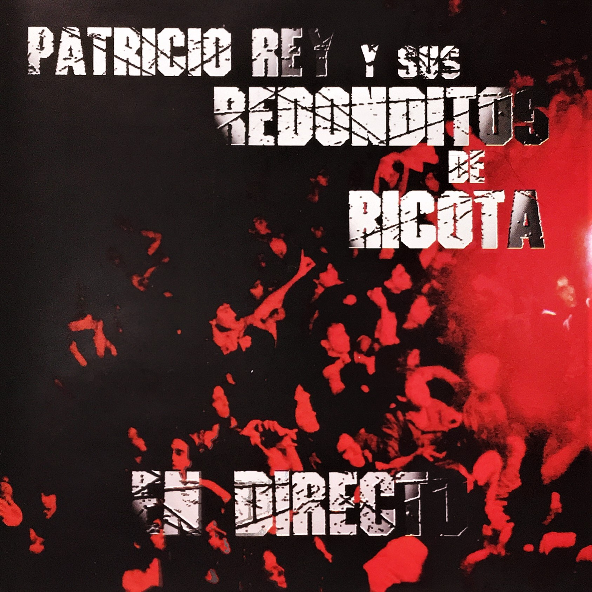
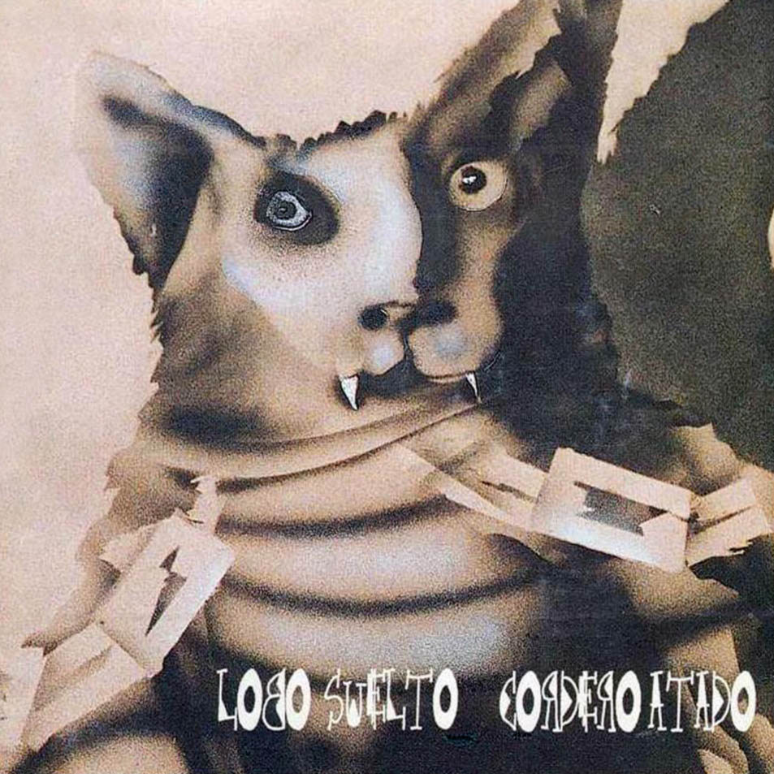
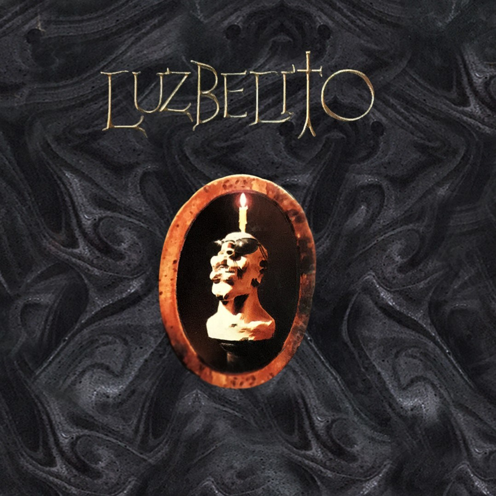
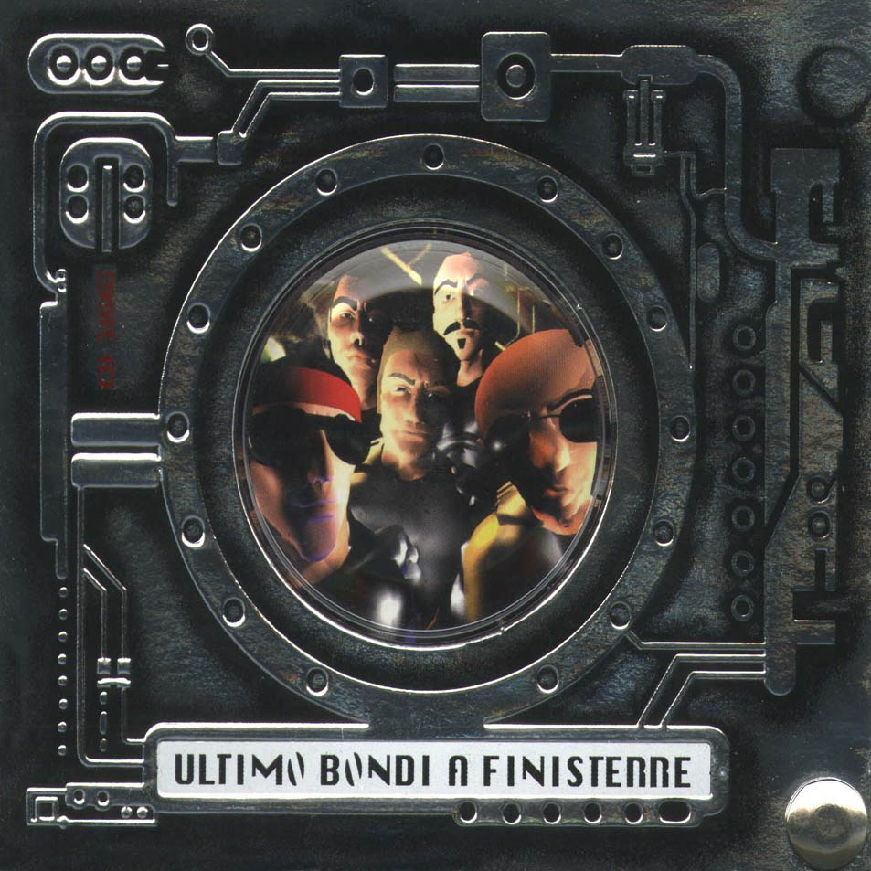
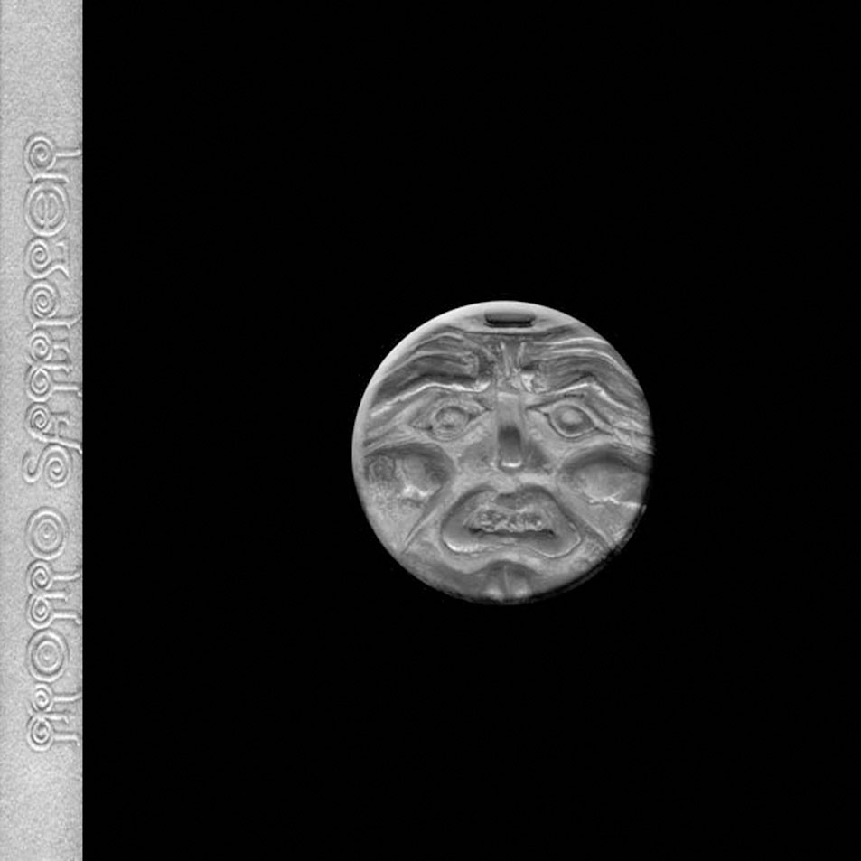

Discografia completa de Patricio Rey:
Discos editados por patricio rey
gulp
disco publicado el 20 de julio de 1985.La grabación tiene un aire festivo, apoyándose los temas en sólidas melodías de guitarra y saxofón. También cuentan con la colaboración de Lito Vitale en piano, Gonzalo Palacios en saxofón, los coros corrieron por parte de Claudia Puyó, Laura Hatton y María Calzada. Para la presentación del álbum la banda alquilo el Teatro Astros los días 16 y 17 de agosto pero, días antes del concierto, Valeria Lynch agrega fechas a sus shows y la banda queda afuera.Finalmente Gulp! se presentó el 23 de agosto de 1985, en la discoteca Cemento.
oktubre
Grabado a mediados de 1986, el álbum se caracteriza por un sonido que incorporó influencias del new wave y el post punk (lo cual significó un cambio con respecto a su álbum anterior, Gulp!), y por su narrativa con elementos distópicos,inspirada por las revoluciones sociales históricas y el contexto bélico internacional de la Guerra fría, así como también del escenario político argentino en el período de la vuelta a la democracia. El arte de tapa, diseñado por el artista plástico Rocambole, está inspirado en la Revolución rusa de 1917.
Un baión para el ojo idiota
Un Baión Para el Ojo Idiota es el tercer álbum de estudio del grupo argentino Patricio Rey y sus Redonditos de Ricota, fue editado en 1988. Según el Indio Solari, voz y líder de la banda junto a Skay Beilinson es una de las grabaciones que mejor capta el espíritu y la idea musical del grupo durante esos años. Varias canciones del álbum se han convertido en clásicos del grupo como «Masacre en el Puticlub», «Todo Preso es Político», «Vencedores Vencidos», «Ella Debe Estar Tan Linda», «Noticias de Ayer», «Aquella Solitaria Vaca Cubana», «Todo un Palo» y «Vamos las Bandas».
¡Bang! ¡Bang! Estás liquidado
¡Bang! ¡Bang!… Estás liquidado es el cuarto álbum de estudio del grupo argentino de rock Patricio Rey y sus Redonditos de Ricota. La edición argentina de la revista Rolling Stone lo ubicó en el puesto 33.º entre los 100 mejores discos del rock nacional.
La mosca y la sopa
La Mosca y la Sopa es el quinto álbum de estudio de la banda de rock argentina Patricio Rey y sus Redonditos de Ricota, publicado en el año 1991. Bajo el sello discográfico Del Cielito Records. El álbum tiene canciones que más tarde se convirtieron en clásicos del grupo como "Mi Perro Dinamita" y "Un Poco de Amor Francés". También tiene otras composiciones destacables como "El pibe de los astilleros" y "Queso ruso", esta última con una compleja lírica que refleja la situación después de la primera Guerra del Golfo.
En directo
En directo es un álbum en vivo de la banda argentina Patricio Rey y sus Redonditos de Ricota, editado en 1992. Es considerado como el álbum "pirata oficial" de la banda y fue el primero en ser masterizado en los Estados Unidos, recoge los fragmentos más destacados de los conciertos brindados durante los recitales en el Teatro de Verano de Uruguay el 8 de diciembre de 1989 y en el mítico Estadio Obras Sanitarias el 27 y 29 de diciembre de 1991.
Lobo suelto
Lobo suelto, cordero atado, vol. 1 es un álbum de estudio del conjunto de rock argentino Patricio Rey y sus Redonditos de Ricota. Junto a Cordero atado se lanzaron el mismo día, ambos bajo el citado dúo de nombres, los dos discos temáticos tratan sobre Lupus el Lobo y de Rulo el Cordero, con distintas canciones y portadas totalmente opuestas.
Cordero atado

Lobo suelto, cordero atado, vol. 2 se trata de dos álbumes de estudio del conjunto de rock argentino Patricio Rey y sus Redonditos de Ricota. Junto a Lobo suelto se lanzaron el mismo día, ambos bajo el citado dúo de nombres, los dos álbumes temáticos tratan sobre Lupus el Lobo y de Rulo el Cordero, con distintas canciones y portadas totalmente opuestas.
Luzbelito
Luzbelito es el séptimo álbum de estudio de Patricio Rey y sus Redonditos de Ricota, publicado en julio 1996, y a su vez una de sus más polémicas obras. Es un disco conceptual que, a través de la idea de un ficticio hijo del Demonio llamado Luzbelito, juega con las ambigüedades de las creencias y comportamientos humanos desde distintos puntos de vista. La edición argentina de la revista Rolling Stone ubicó al disco en el puesto 88 entre los 100 mejores discos del rock nacional. También, «Mariposa Pontiac - Rock del País» fue considerado por Rock.com.ar como la 3° canción más destacada del Rock nacional.
Ultimo bondi a Finisterre
Último Bondi a Finisterre es el octavo álbum del grupo de rock argentino Patricio Rey y sus Redonditos de Ricota, lanzado el 18 de noviembre de 1998. La grabación presenta un giro en el tradicional sonido del grupo, con canciones más melódicas, y mayor uso de las posibilidades que brinda el estudio y las computadoras en la confección de una canción de rock. Temas como «Gualicho», «Las Increíbles Andanzas del Capitán Buscapina en Cybersiberia», «Pogo», «Estás Frito Angelito» «Scaramanzia» y «La Pequeña Novia del Carioca» se han convertido en clásicos de la banda.
Momo sampler
Momo Sampler es el noveno y último álbum de estudio de Patricio Rey y sus Redonditos de Ricota, lanzado en el año 2000. Sigue la línea de su antecesor, en el que la banda busca nuevos sonidos y formas para sus temas. Aparte de la influencia electrónica, también se reconocen vestigios de música celta, cuerdas y ritmos que recuerdan a las murgas. Fueron lanzados tres sencillos para promocionar el álbum, entre los cuales se destaca «Una Piba Con la Remera de Greenpeace».